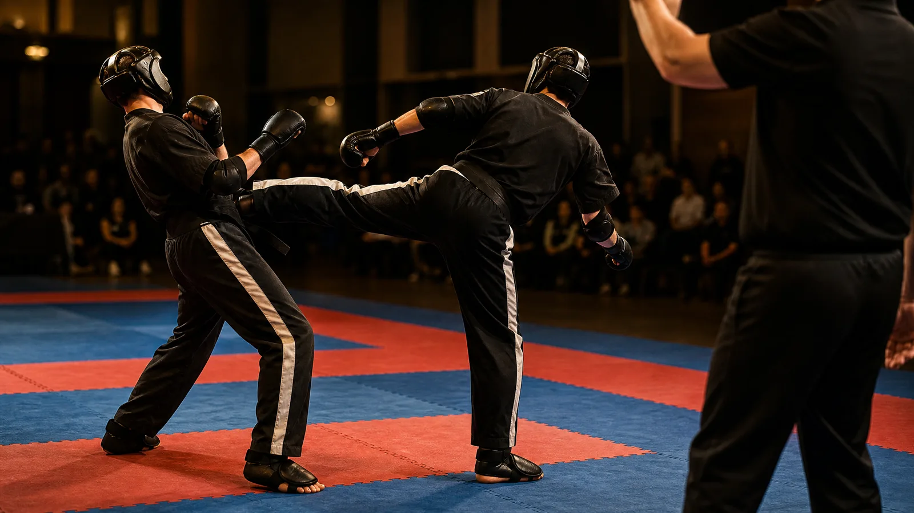

Wer nach den Regeln im Kickboxen sucht, landet schnell in einem Stapel PDF-Dateien. Das liegt am Sport selbst: Kickboxen ist eine ganze Familie von Disziplinen. Ein Pointfighter, der nach jedem Treffer auf die Finger der Kampfrichter schaut, und eine K-1-Kämpferin, die im Ring Knie zum Körper schlägt, betreiben beide Kickboxen. Ihre Regeln haben trotzdem wenig gemeinsam.
Dieser Artikel geht die sechs Kampfdisziplinen des Weltverbands WAKO durch: was erlaubt ist, wohin du treffen darfst, wie gewertet wird, wie lange ein Kampf dauert und welche Schutzausrüstung Pflicht ist. Grundlage ist das WAKO-Regelwerk in der Fassung vom 4. Mai 2022 zusammen mit den Vorstandsbeschlüssen vom 20. März 2026. Wo die ISKA oder die Profiliga GLORY anders vorgehen, steht es dabei. Danach geht es um Training und Sparring und darum, was Muay Thai anders macht.
Stand der Regeln: November 2026. Laut einem Rundschreiben vom März 2026 arbeitet die WAKO an einer überarbeiteten Gesamtfassung ihres Regelwerks. Für dein Turnier gelten immer die Ausschreibung des Veranstalters und die Ordnung deines Landesverbands. National weichen zum Beispiel die Rundenzeiten ab, und die WAKO Deutschland nennt auf ihrer K-1-Seite wie im Full Contact mindestens sechs Kicks pro Runde.
Welche Regeln gelten beim Kickboxen?
Das hängt von zwei Dingen ab: vom Verband und von der Disziplin. Die WAKO (World Association of Kickboxing Organizations) ist ein Weltverband mit nach eigenen Angaben 130 Mitgliedsnationen, in Deutschland vertreten durch die WAKO Deutschland. Daneben gibt es die ISKA, die WKU und weitere Verbände, im Profibereich außerdem Ligen wie GLORY mit eigenen Regelwerken.
Die WAKO unterscheidet sechs Kampfdisziplinen und dazu die Formen, bei denen ohne Gegner Techniken vorgeführt werden. Die Kampfdisziplinen teilt sie in zwei Gruppen. Auf der Tatami, einer Mattenfläche, wird mit kontrollierter Kraft gekämpft, und gewonnen hat, wer mehr Punkte sammelt: Pointfighting, Light Contact und Kick Light. Im Ring werden alle erlaubten Techniken mit voller Kraft geschlagen, der Kampf kann also auch durch K. o. enden: Full Contact, Low Kick und K-1, bei der WAKO offiziell „K1 Style“.
Ein paar Regeln gelten in allen sechs Disziplinen. Kopfschutz, Mundschutz und Tiefschutz sind Pflicht, für Männer und Frauen; Frauen tragen zusätzlich einen Brustschutz. Ellbogen und Kopfstöße sind verboten, ebenso Angriffe auf Rücken, Nacken und Genitalbereich und jeder Angriff auf einen Gegner, der am Boden ist. Der Hauptkampfrichter gibt seine Kommandos auf Englisch: „Fight“, „Stop“, „Break“. Und wer an einem Wettkampf teilnehmen will, braucht ein ärztliches Attest „fit to fight“, das nicht älter als ein Jahr ist.
Was ist der Unterschied zwischen Tatami und Ring?
Auf der Tatami wird kontrolliert getroffen, im Ring mit voller Kraft. Die Tatami misst bei WAKO-Turnieren 7 × 7 Meter, rundherum liegt ein Meter Sicherheitszone. Wer die Fläche freiwillig verlässt, kassiert einen Minuspunkt, beim vierten „Exit“ ist der Kampf verloren. Der Ring ist innerhalb der Seile zwischen 5,20 und 6,10 Meter breit und hat vier Seile. Herausfallen ist dort schwerer, dafür ist der K. o. ein regulärer Sieg.
Am deutlichsten zeigt sich der Unterschied beim Niederschlag. Im Ring bekommt, wer seinen Gegner zu Boden bringt, laut WAKO einen Zusatzpunkt auf die Wertung des Treffers. Nach drei Niederschlägen im selben Kampf ist Schluss, bei den jüngeren Junioren schon nach zwei. Auf der Tatami ist es umgekehrt: Schlägt ein Kämpfer seinen Gegner mit einem zu harten, unkontrollierten Treffer nieder, bekommt er einen Minuspunkt. Beim dritten solchen Niederschlag wird er disqualifiziert.
Auch beim Alter gibt es Unterschiede. Pointfighting ist bei der WAKO ab 7 Jahren möglich, Light Contact und Kick Light ab 13, die Ringdisziplinen erst ab 15. Im Ring ist dafür mit 40 Schluss, während Veteranen bis 55 auf der Tatami kämpfen.
Was ist Pointfighting?
Pointfighting ist die Disziplin mit dem leichtesten Kontakt und der klarsten Wertung. Nach jedem Treffer unterbricht der Hauptkampfrichter den Kampf. Zeigen mindestens zwei der drei Kampfrichter auf denselben Kämpfer, gibt es Punkte. Die WAKO Deutschland zieht selbst den Vergleich zum Fechten. Die Zeit läuft während dieser Unterbrechungen weiter.
Gezählt wird nach Schwierigkeit:
- 1 Punkt für einen Faustschlag, einen Kick zum Körper oder einen Fußfeger, nach dem der Gegner mit mehr als den Füßen den Boden berührt
- 2 Punkte für einen Kick zum Kopf oder einen gesprungenen Kick zum Körper
- 3 Punkte für einen gesprungenen Kick zum Kopf; gesprungen zählt nur, wenn der Kämpfer beim Treffer noch in der Luft ist
Ein Treffer zählt nur, wenn er sauber, kontrolliert und mit „vernünftiger“ Kraft kommt, wie es im Regelwerk heißt: nicht zu hart, nicht zu weich. Bloßes Antippen, Wischen oder Schieben gibt nichts, und wer beim Schlag nicht zum Ziel schaut, punktet auch nicht. Erlaubt sind Gerade, Haken, Aufwärtshaken, Backfist (Faustrückenschlag) und Ridge Hand, ein Schlag mit der Daumenseite der Hand. Die gedrehte Backfist ist verboten. Bei den Kicks sind Front-, Side-, Roundhouse-, Hook-, Crescent- und Axe-Kick erlaubt, dazu Sprung- und Drehkicks. Hook- und Axe-Kick und alle gesprungenen Drehkicks müssen mit der Fußsohle treffen, nicht mit der Ferse.
Ziel sind der Kopf vorn und seitlich und der Rumpf vorn und seitlich bis zum Hosenbund. Nach den Erläuterungen der WAKO Deutschland zählt im Pointfighting auch der Hinterkopf, wenn der Angriff von vorn kommt. Die Füße darfst du nur fegen. Liegt ein Kämpfer zehn Punkte vorn, ist der Kampf vorbei. Steht es nach Ablauf der Zeit unentschieden, geht es eine Minute weiter. Ist es danach immer noch gleich, gewinnt, wer als Nächstes trifft.

Gekämpft wird in einem Oberteil mit V-Ausschnitt und langer Hose; der Gürtel mit deiner Graduierung darf getragen werden. In Light Contact und Kick Light ist er dagegen ausdrücklich verboten. Wie die Gürtelstufen aufeinander aufbauen, steht in Kickboxen Gürtel: Reihenfolge, Farben und Prüfung. Pflicht sind Kopfschutz, Mundschutz, offene Pointfighting-Handschuhe mit 8 Unzen, Ellenbogenschützer, Tiefschutz, Schienbein- und Fußschutz, für Frauen ein Brustschutz. Kinder bis 12 Jahre tragen zusätzlich eine Gesichtsmaske am Kopfschutz.
Junioren und Senioren kämpfen bei Meisterschaften drei Runden à zwei Minuten mit einer Minute Pause. Bei Cups und offenen Turnieren darf der Veranstalter Seniorenkämpfe auf zwei Runden verkürzen. In Deutschland sind auf Landesebene laut WAKO Deutschland zwei Runden üblich, je nach Turnier à zwei Minuten oder à 1,5 Minuten. Erst Finalkämpfe auf Bundesebene gehen über drei Runden.
Was ist Light Contact (Leichtkontakt)?
Light Contact ist Kickboxen ohne Unterbrechung, aber mit gebremster Wucht. Gekämpft wird durch, bis der Hauptkampfrichter „Stop“ oder „Break“ ruft. Die WAKO beschreibt die Disziplin als Zwischenstufe zwischen Pointfighting und Full Contact: Techniken wie im Ring, aber gut kontrolliert. Zu harter Kontakt ist ein Regelverstoß.
Die Wertung übernehmen drei Punktrichter an den Ecken der Matte, meist über ein elektronisches System. Jeder klickt für sich: einmal für Hand- und Fußtechniken zum Körper und für Fausttreffer zum Kopf, zweimal für einen Kick zum Kopf oder einen Sprungkick zum Körper, dreimal für einen Sprungkick zum Kopf. Der Hauptkampfrichter wertet nicht, er achtet auf die Regeln. Ein Minuspunkt zieht bei jedem Punktrichter drei Punkte ab. Wer bei mindestens zwei Punktrichtern 15 Punkte vorn liegt, hat vorzeitig gewonnen. Bei Gleichstand gewinnt, wer in der letzten Runde mehr Punkte hatte; ist auch das gleich, entscheiden die Punktrichter nach festen Kriterien: aktiver, mehr Kicks, bessere Verteidigung, besserer Stil.
Ziel sind Kopf und Rumpf, jeweils vorn und seitlich, die Füße nur zum Fegen. An Schlägen sind Gerade, Haken und Aufwärtshaken erlaubt, eine Backfist gibt es hier nicht. Die Kicks sind dieselben wie im Pointfighting. Gekämpft wird in Rundhals-T-Shirt und langer Hose mit 10-Unzen-Handschuhen; Bandagen sind Pflicht, dazu Kopf-, Mund-, Tief-, Schienbein- und Fußschutz.
Die ISKA sieht Leichtkontakt anders, nämlich als Ringsport. Laut ihrem deutschen Amateur-Regelwerk sollen die Kämpfe möglichst im Boxring stattfinden, der Stil soll „Boxen mit Kicks“ sein, mit der Schlagstärke eines Sparrings. Kicks auf die Beine sind dort ebenfalls verboten.
Was ist Kick Light?
Kick Light ist Light Contact mit Low Kicks. Zusätzlich erlaubt sind Tritte gegen die Oberschenkel, von außen, innen und hinten, oberhalb des Knies. Die WAKO nennt Kick Light eine Zwischenstufe zwischen Light Contact und Low Kick: die Techniken des Low Kick, aber kontrolliert, auf der Matte statt im Ring.
Gerade Tritte, also Front- und Sidekick, und der gedrehte Rückwärtstritt (Spinning Back Kick) dürfen nur zu Kopf und Körper gehen, nicht auf den Oberschenkel. Tritte aufs Knie und darunter sind verboten, ebenso Backfist und gedrehte Backfist. Blockt oder checkt der Gegner einen Low Kick bewusst, etwa mit dem angehobenen Schienbein, gibt es keinen Punkt. Feger gehen „Schuh gegen Schuh“, zwischen Knöchel und Mitte der Wade. Gewertet wird wie im Light Contact, ein sauberer Kick auf den Oberschenkel bringt einen Klick. Weil die Beine Ziel sind, wird in Shorts und ärmellosem Shirt gekämpft.
Was ist im Full Contact erlaubt?
Full Contact, auf Deutsch Vollkontakt, ist die klassische Ringdisziplin: volle Kraft, aber nur oberhalb der Gürtellinie. Trefferzonen sind der Kopf (vorn, Stirn, seitlich) und der Rumpf vorn und seitlich. Die Beine sind tabu, mit einer Ausnahme: Feger auf Knöchelhöhe, die den Gegner aus dem Gleichgewicht bringen sollen.
Erlaubt sind Gerade, Haken und Aufwärtshaken sowie alle gängigen Kicks einschließlich Sprung- und Drehtritten zu Kopf und Körper, auch mit dem Schienbein. Verboten sind Backfist und gedrehte Backfist, Knie, Ellbogen und jeder Tritt gegen Hüfte, Knie oder Schienbein. Männer kämpfen mit freiem Oberkörper und langer Hose, Frauen in Sporttop und langer Hose. Dazu kommen Kopfschutz, Mundschutz, 10-Unzen-Handschuhe, Bandagen, Tiefschutz, Schienbein- und Fußschutz.
Die Besonderheit ist die Kickpflicht. Jeder Kämpfer muss pro Runde mindestens sechs Kicks schlagen, die erkennbar treffen sollen; zwei Kickzähler am Ring zählen mit. Fehlen nach der ersten oder zweiten Runde Kicks, sagt der Hauptkampfrichter Bescheid, und du kannst sie in der folgenden Runde nachholen. Gelingt das nicht, oder fehlen in der dritten Runde Kicks, gibt es einen Minuspunkt. Für diese Regel verteilt der Hauptkampfrichter höchstens zwei Minuspunkte. So bleibt Full Contact Kickboxen und wird nicht zum Boxen mit gelegentlichem Tritt.
Bei der ISKA gibt es im Full Contact keine feste Mindestzahl an Kicks. Ihre europäischen Regeln verlangen stattdessen, dass ein Kämpfer über die ganze Runde hinweg weiter tritt, in einem fairen Verhältnis zu den Schlägen. Wer zehn Kicks in den ersten 30 Sekunden schlägt und danach nur noch boxt, erfüllt das nicht. Profikämpfe gehen dort über fünf bis zwölf Runden à zwei Minuten.
Was sind die Low-Kick-Regeln?
Low Kick ist Full Contact plus Tritte gegen die Oberschenkel: von außen, innen und hinten, unterhalb der Hüfte und oberhalb des Knies, mit voller Kraft und auch mit dem Schienbein. Tritte aufs Knie und darunter bleiben verboten. Gerade Tritte und der gedrehte Rückwärtstritt dürfen nicht aufs Bein gehen, und Faustschläge auf die Beine sind ebenso untersagt wie Knie, Ellbogen und Backfist.
Weil der Oberschenkel getroffen wird, ändert sich die Kleidung: Shorts statt langer Hose, und die Schienbeinschoner müssen auch den Spann bedecken. Schützer in Sockenform sind verboten, ein Fußschutz entfällt, Fußbandagen sind erlaubt. Die Kickpflicht kennt das internationale Regelwerk nur im Full Contact. Wie du deine Ausrüstung Schritt für Schritt zusammenstellst, steht in Kickboxen Ausrüstung für Anfänger.
Bei der ISKA heißt die Disziplin „Freestyle“. Nach ihren europäischen Regeln sind Low Kicks dort auch gegen die Wade erlaubt, innen und außen. Gekämpft wird drei Runden à drei Minuten, Titelkämpfe gehen über fünf Runden.
Welche Regeln gelten im K-1?
K-1 ist die Ringdisziplin mit den meisten Waffen: Fäuste, Füße und Knie. Ziel sind Kopf und Rumpf, jeweils vorn und seitlich, und das ganze Bein, einschließlich der Gelenke. Erlaubt ist auch die gedrehte Backfist, die in Full Contact und Low Kick verboten ist. Gerade Tritte und Kniestöße gegen die Vorderseite von Oberschenkel, Knie oder Schienbein sind dagegen nicht erlaubt. Verboten ist es auch, das Bein des Gegners zu fangen, und sei es nur kurz.
Beim Clinch steht eine Änderung an. Bis Ende 2026 darfst du den Gegner an Nacken oder Schultern halten, um sofort mit dem Knie anzugreifen, aber nur mit einem Knie pro Halten und höchstens fünf Sekunden lang; so steht es im internationalen WAKO-Regelwerk (Kapitel 10) und ebenso bei der WAKO Deutschland. Ab dem 1. Januar 2027 ist Clinchen, Halten und Greifen im WAKO-K-1 laut Vorstandsbeschluss vom 20. März 2026 komplett verboten. Im Gegenzug fällt die Begrenzung der Kniestöße weg. Knie kommen dann nur noch aus der freien Distanz, dafür so oft du willst.
Im Profibereich kämpft unter anderem die Liga GLORY nach einem Regelwerk, das dem K-1-Stil sehr nahe kommt. Ihre Regeln vom 16. März 2026 erlauben den Clinch nur, um sofort ein einzelnes Knie zu schlagen; danach muss gelöst werden. Ein gefangenes Bein darf für genau einen Schlag gehalten werden. Feger und Würfe sind verboten. Ein normaler Kampf geht über drei Runden à drei Minuten, ein Titelkampf über fünf. Die Handschuhe wiegen 10 Unzen, in Klassen unter 65 kg 8 Unzen. Kopf- und Schienbeinschutz tragen die Kämpfer dort nicht: Vorgeschrieben sind Mundschutz und für Männer Tiefschutz, jede weitere Schutzausrüstung braucht eine Genehmigung. Woher K-1 kommt und warum der Name bis heute für einen Regelsatz steht, liest du in K-1 Kampfsport erklärt.
Wie unterscheiden sich die sechs Disziplinen im Überblick?
Von Disziplin zu Disziplin kommen Trefferzonen und Techniken dazu. Die Tabelle fasst die Regeln der WAKO für Senioren zusammen.
Kickboxen Regeln im Vergleich: die sechs WAKO-Disziplinen
| Disziplin | Fläche | Ziele | Beine | Knie, Clinch | Ausrüstung | Wertung |
|---|---|---|---|---|---|---|
| Pointfighting ab 7 Jahren | Tatami, kontrolliert, Stopp nach jedem Treffer | Kopf, Rumpf vorn und seitlich | nur Fußfeger | nein | V-Oberteil, lange Hose, offene Handschuhe 8 oz | 1 bis 3 Punkte; 10 Vorsprung beenden |
| Light Contact ab 13 Jahren | Tatami, leichter Kontakt, durchgehend | Kopf, Rumpf vorn und seitlich | nur Fußfeger | nein | T-Shirt, lange Hose, 10 oz | 1 bis 3 Klicks; 15 Vorsprung beenden |
| Kick Light ab 13 Jahren | Tatami, leichter Kontakt, durchgehend | plus Oberschenkel | Oberschenkel, nicht Knie und darunter | nein | ärmellos, Shorts, 10 oz | wie Light Contact |
| Full Contact ab 15 Jahren | Ring, volle Kraft | Kopf, Rumpf über der Gürtellinie | nur Fußfeger | nein | lange Hose, Fußschutz, 10 oz | 1 Punkt je Treffer, Niederschlag +1; 6 Kicks pro Runde |
| Low Kick ab 15 Jahren | Ring, volle Kraft | plus Oberschenkel | Oberschenkel außen, innen, hinten | nein | Shorts, Schienbein mit Spann, 10 oz | 1 Punkt je Treffer, Niederschlag +1 |
| K-1 Style ab 15 Jahren | Ring, volle Kraft | Kopf, Rumpf, ganzes Bein inkl. Gelenke | ganzes Bein, keine geraden Tritte | Knie ja; Clinch bis 2026 kurz, ab 2027 verboten | Shorts, Schienbein mit Spann, 10 oz | 1 Punkt je Treffer, Niederschlag +1 |
In allen sechs Disziplinen Pflicht: Kopfschutz, Mundschutz, Tiefschutz (für alle), Schienbeinschutz, für Frauen Brustschutz. Ellbogen und Kopfstöße sind überall verboten. Kampfzeit bei Meisterschaften für Junioren und Senioren jeweils 3 × 2 Minuten. Quellen: WAKO Rules (Version 2 vom 04.05.2022), Kapitel 1 bis 10; WAKO Rules Change K1 Style (gültig ab 01.01.2027). Stand: November 2026.
Wohin du in welcher Disziplin treffen darfst, zeigt die Grafik. Sie ist vereinfacht: Arme, Hände, Nacken, Rücken und der Bereich unter der Gürtellinie sind in keiner Kickbox-Disziplin Ziel, die Ausnahmen an den Beinen stehen oben im Text.
Wohin du treffen darfst: Trefferzonen nach Disziplin
Schema nach WAKO Rules (Version 2 vom 04.05.2022), Kapitel 3 bis 5 und 8 bis 10. Kopf: vorn, Stirn und seitlich, im Pointfighting laut WAKO Deutschland auch der Hinterkopf bei einem Angriff von vorn. Oberschenkel in Kick Light und Low Kick: außen, innen und hinten oberhalb des Knies. K-1: ganzes Bein, gerade Tritte und Knie aber nicht gegen die Vorderseite von Oberschenkel, Knie oder Schienbein. Eigene Grafik, Stand: November 2026.
Was ist beim Kickboxen verboten?
In allen sechs WAKO-Disziplinen verboten sind Kopfstöße, Ellbogen, Angriffe auf Rücken, Nacken, Nieren und Genitalbereich, Würfe und Ringen, Angriffe auf einen Gegner, der am Boden ist oder gerade fällt, und alles nach „Stop“, „Break“ oder dem Rundengong. Dazu gehören auch: mit offenem Handschuh oder dessen Innenseite schlagen, sich absichtlich fallen lassen, den Rücken zudrehen oder weglaufen, den Mundschutz ausspucken und Gesicht oder Körper einölen. Vaseline ist im Ring erlaubt.
Sind im Kickboxen Knie erlaubt?
Nur im K-1. In Pointfighting, Light Contact, Kick Light, Full Contact und Low Kick ist das Knie bei der WAKO verboten. Bei der ISKA sind Knie im K-1 und in den „Oriental Rules“ erlaubt, im K-1-Sparring der ISKA Deutschland nur zum Rumpf und ohne Clinch. Ellbogen gibt es in keiner Kickbox-Disziplin, die gehören zum Muay Thai.
Wie wird ein Regelverstoß bestraft?
Die WAKO kennt drei Stufen der Verwarnung: die Ermahnung im laufenden Kampf, die mündliche Verwarnung und die offizielle Verwarnung. Die ersten beiden gibt es pro Kampf nur einmal. Bei den offiziellen Verwarnungen steigt die Strafe: Die erste bleibt ohne Abzug, die zweite kostet einen Minuspunkt, die dritte einen weiteren, die vierte bedeutet Disqualifikation. Bei groben Verstößen kann der Hauptkampfrichter mit Zustimmung des Chefkampfrichters direkt einen Minuspunkt geben oder disqualifizieren. Exits auf der Tatami werden getrennt gezählt. In Light Contact, Kick Light und im Ring zieht ein Minuspunkt bei jedem Punktrichter drei Punkte ab.
Wie wird gewertet: Treffer zählen oder 10-Punkte-System?
Bei der WAKO werden Treffer gezählt, bei der ISKA und im Profibereich werden Runden bewertet. In den Ringdisziplinen der WAKO zählt jeder Treffer einen Punkt, egal ob Faust, Kick oder Knie. Er muss aus der richtigen Distanz, mit voller Kraft und der richtigen Schlagfläche kommen und ungeblockt auf einer erlaubten Zone landen; ein teilweise abgelenkter Treffer zählt nicht. Ein Niederschlag bringt einen Zusatzpunkt. Jeder der drei Punktrichter hat am Ende eine eigene Summe, gewonnen hat, wen die Mehrheit vorn sieht. Das Publikum sieht die Punkte live auf einem Bildschirm.
Das 10-Punkte-Must-System funktioniert anders. Nach jeder Runde bekommt der Bessere 10 Punkte, der andere 9, bei klarer Überlegenheit oder einem Niederschlag 8 oder weniger. Bei der ISKA Deutschland liegt die Untergrenze im Amateurbereich bei 8 Punkten pro Runde. Die Punktrichter sollen dort Kicks höher bewerten als Fausttreffer; das Regelwerk sagt: „Der Kicker soll immer den Vorteil haben.“ Zählgeräte (Clicker) empfiehlt die ISKA ausdrücklich nicht, weil sie nur Angriffe erfassen, nicht aber Verteidigung oder Kampfverständnis. Bei GLORY werten fünf Punktrichter nach einer festen Reihenfolge: zuerst Niederschläge, dann die Wirkung beim Gegner, dann die Zahl der sauberen Treffer, zuletzt Aggressivität und Ringkontrolle.
So wird im Kickboxen gewertet
| Regelwerk | Wer wertet | Wie | Bei Gleichstand |
|---|---|---|---|
| WAKO Pointfighting | Hauptkampfrichter und 2 Punktrichter | Stopp nach Treffer, 1 bis 3 Punkte bei Mehrheit | 1 Minute Verlängerung, dann zählt der nächste Treffer |
| WAKO Light Contact, Kick Light | 3 Punktrichter, elektronisch | jeder Treffer 1 bis 3 Klicks; Minuspunkt = −3 | mehr Punkte in der letzten Runde, dann Kriterien |
| WAKO Ring | 3 Punktrichter, elektronisch | jeder Treffer 1 Punkt, Niederschlag +1; Minuspunkt = −3 | mehr Punkte in der letzten Runde, dann Kriterien |
| ISKA Deutschland, Amateure | Punktrichter | 10-Punkte-Must, Runde 10:9 oder 10:8; Kicks zählen mehr | im Turnier kein Unentschieden |
| GLORY, Profis | 5 Punktrichter (oder 3) | 10-Punkte-Must: Niederschläge, Wirkung, saubere Treffer, Aggressivität | Zusatzrunde „Sudden Victory“ |
Kriterien der WAKO bei Gleichstand: aktiver, mehr Kicks, bessere Verteidigung, besserer Stil. Quellen: WAKO Rules (04.05.2022), Kapitel 2, 3 und 7; ISKA Deutschland, Amateur-Reglement (Stand Januar 2022), Abschnitt 1.14; GLORY Rules and Regulations (16.03.2026), Abschnitt 5.06. Stand: November 2026.
Wie lange dauert ein Kickbox-Kampf?
Bei WAKO-Meisterschaften dauert ein Kampf für Junioren und Senioren drei Runden à zwei Minuten mit einer Minute Pause, auf der Tatami wie im Ring. Kinder bis 9 Jahre kämpfen im Pointfighting zwei Runden à eine Minute, Veteranen zwei Runden à zwei Minuten. Bei Cups und offenen Turnieren darf der Veranstalter Tatami-Kämpfe kürzen. Im Ring gilt das Format laut Regelwerk für alle Altersklassen.
Im Profibereich wird es deutlich länger. Bei GLORY sind es drei Runden à drei Minuten, im Titelkampf fünf. Ein WM-Titelkampf im Full Contact nach ISKA-Europa-Regeln geht über zwölf Runden à zwei Minuten.
Reine Kampfzeit pro Kampf: vom Kinderturnier bis zur Profi-WM
Reine Rundenzeit ohne Pausen und Verlängerungen. Quellen: WAKO Rules (04.05.2022), Kapitel 2, Art. 4 und Kapitel 7, Art. 4; ISKA Deutschland (Januar 2022), Abschnitt 1.18; GLORY Rules (16.03.2026), Abschnitt 5.04; ISKA Europe Rules & Regulations (Edition 2018), Abschnitt 5. Eigene Grafik, Stand: November 2026.
Ab welchem Alter darf man an Kickbox-Wettkämpfen teilnehmen?
Bei der WAKO ab 7 Jahren, im Pointfighting. Maßgeblich ist das Geburtsjahr, nicht der Geburtstag. Die Altersklassen und ihre Disziplinen sehen so aus:
- Kinder (7 bis 9) und jüngere Kadetten (10 bis 12): Pointfighting
- Ältere Kadetten (13 bis 15): Pointfighting, Light Contact, Kick Light
- Junioren (16 bis 18): alle Tatami-Disziplinen
- Jüngere Junioren (15 und 16) und ältere Junioren (17 und 18): Full Contact, Low Kick, K-1
- Senioren (19 bis 40): alle Disziplinen
- Veteranen (41 bis 55): nur Tatami-Disziplinen; in Seniorenklassen der Tatami dürfen sie seit März 2026 nur noch bis 45 starten
Zwei Regeln betreffen alle. Für jeden Wettkampf brauchst du ein ärztliches Attest, das nicht älter als ein Jahr ist. Und nach einem K. o. durch Kopftreffer oder einem Abbruch wegen schwerer Kopftreffer darfst du laut WAKO mindestens vier Wochen an keinem Wettkampf teilnehmen, in keiner Disziplin. Zurück darfst du erst, wenn dich ein Arzt nach einer Untersuchung für wettkampftauglich erklärt. In welcher Gewichtsklasse du antrittst, steht in unserem Überblick Gewichtsklassen im Kampfsport.
Welche Regeln gelten im Training und Sparring?
Für dein Training gibt es kein Verbandsregelwerk. Es gelten die Regeln deiner Halle und die Absprache mit deinem Partner. Die Wettkampfdisziplinen sind trotzdem ein gutes Gerüst, weil sie Kontaktstufen klar beschreiben. Die WAKO selbst ordnet ihre Disziplinen als Stufenleiter: Light Contact als Zwischenstufe zwischen Pointfighting und Full Contact, Kick Light als Zwischenstufe zwischen Light Contact und Low Kick. Die ISKA Deutschland hat als Vorstufe zum K-1 sogar ein eigenes Wettkampfformat, das „K-1 Sparring“: explosive Techniken mit leichtem Kontakt, Low Kicks auf die Oberschenkel, Knie nur zum Rumpf und ohne Clinch, zwei Runden à zwei Minuten. Ein Sieg durch Niederschlag ist dort nicht vorgesehen.
Für dein Sparring heißt das:
- Sag die Kontaktstufe vorher an. „Light Contact“ oder „Kick Light“ sind Begriffe, unter denen sich beide dasselbe vorstellen.
- Klär die Techniken. Low Kicks ja oder nein, Knie ja oder nein, Clinch ja oder nein. Was im Wettkampf deiner Disziplin verboten ist, bleibt auch im Sparring draußen.
- Trag die Schutzausrüstung wie im Wettkampf. Kopfschutz, Mundschutz, Tiefschutz und Schienbeinschoner, im Sparring meist mit schwereren Handschuhen als im Wettkampf.
- Einer hat das Sagen. Die Trainerin oder der Trainer stellt die Paare zusammen und achtet auf Gewicht und Erfahrung. „Stop“ heißt Stopp, auch im Training.
Dass die Amateurregeln einen Unterschied machen können, deutet eine Auswertung aus den USA an. Lystad (2015) hat 15 Jahre offizieller Aufzeichnungen der Sportkommission von Nevada ausgewertet: 481 Kämpfer, 976 Kampfeinsätze, 380 Verletzungen. 57,8 % betrafen den Kopf. Profis verletzten sich 2,5-mal so häufig wie Amateure. Welche Regel den Unterschied ausmacht, schlüsselt die Studie nicht auf.
Was ist bei Muay Thai anders?
Muay Thai erlaubt vieles, was im Kickboxen verboten ist: Ellbogen, Clinch mit Kniestößen und Tritte gegen fast den ganzen Körper. Nach dem Regelwerk des internationalen Amateurverbands IFMA (Stand 11. Mai 2026) zählt jeder Schlag, Tritt, Knie- oder Ellbogenstoß, der mit Kraft und Absicht ein Ziel trifft. Ziel ist der ganze Körper außer Genitalbereich und Nacken. Nach den europäischen ISKA-Regeln gehören auch Muay-Thai-Würfe dazu.
Elite-Kämpfe bei der IFMA gehen über drei Runden à drei Minuten, bewertet wird nach dem 10-Punkte-Must-System. Kopfschutz, Schienbeinschoner und Ellbogenschützer sind im Amateur-Muay-Thai der IFMA Pflicht. In der Altersklasse U14 sind Knie und Ellbogen zum Kopf verboten, bei noch jüngeren Kämpfern jeder Treffer zum Kopf. Vor dem Kampf zeigen die Athleten den Wai Kru, einen traditionellen Ritualtanz. Zwischen beiden Welten liegen die „Oriental Rules“ der ISKA: alle Techniken aus Kickboxen und Muay Thai, nur ohne Ellbogen und Unterarm.
Was wir in der Halle beobachten
Unsere Trainer stehen seit 2006 in der Halle, heute trainieren jeden Monat über 1.500 Menschen offline mit ihnen. Mehrere kommen aus dem ISKA-System: Jana ist ISKA-Weltmeisterin, Mohsen K1-Weltmeister der ISKA, Nils trägt den 5. DAN der ISKA. Was folgt, sind Beobachtungen aus der Trainingspraxis, keine Studienergebnisse:
- Wer aus dem Pointfighting kommt, bleibt im ersten Light-Contact-Sparring oft nach dem Treffer stehen. Der Reflex, auf das Stopp zu warten, sitzt tief. Im Durchkämpfen ist genau dieser Moment die offene Tür für den Konter.
- Die Kickpflicht im Full Contact wird unterschätzt. Sechs Kicks pro Runde klingen nach wenig, bis in der dritten Runde die Beine schwer werden und man lieber boxt.
- Ärger im Sparring entsteht meist beim Kontakt, nicht bei der Technik. Zwei Leute mit unterschiedlicher Vorstellung von „leicht“ sind das häufigste Problem. Wer vorher „Light Contact“ sagt und es auch meint, hat selten eins.
- Wer die Regeln seiner Disziplin kennt, trainiert gezielter. Im Low Kick gehört das Checken des Oberschenkeltritts in jede Einheit, im Pointfighting das schnelle Zurück aus der Distanz.
Das Wichtigste in vier Sätzen
Kickboxen besteht bei der WAKO aus sechs Kampfdisziplinen: Pointfighting, Light Contact und Kick Light auf der Tatami mit kontrolliertem Kontakt, Full Contact, Low Kick und K-1 im Ring mit voller Kraft. Von Disziplin zu Disziplin kommen Ziele und Waffen dazu: die Oberschenkel im Kick Light und Low Kick, das ganze Bein und das Knie im K-1, wo bei der WAKO ab 2027 nicht mehr geclincht werden darf. Die WAKO zählt Treffer; ISKA, GLORY und Muay Thai bewerten Runden nach dem 10-Punkte-Must-System. Ellbogen, Kopfstöße und Angriffe auf Rücken, Nacken und Genitalbereich sind in allen Kickbox-Disziplinen verboten, und im Amateurbereich ist Kopfschutz überall Pflicht.